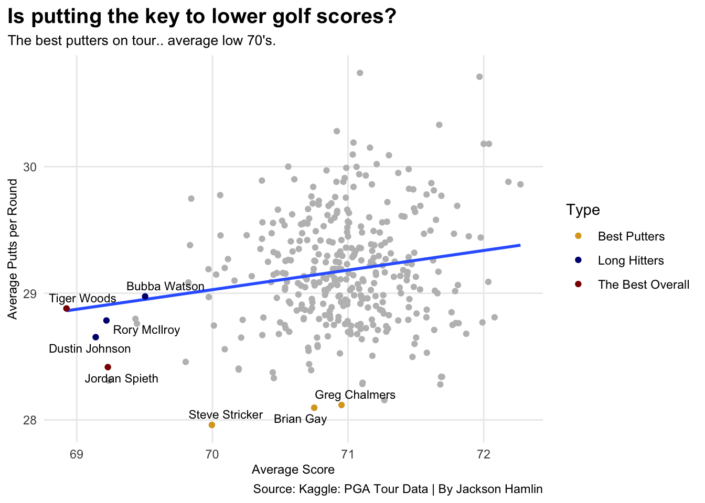
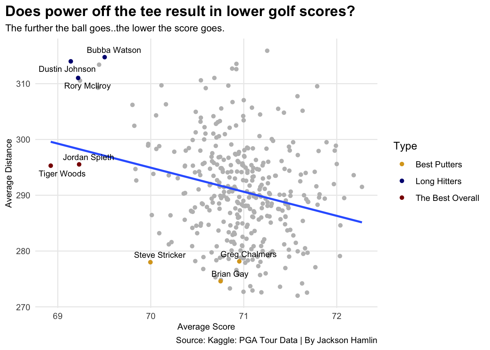
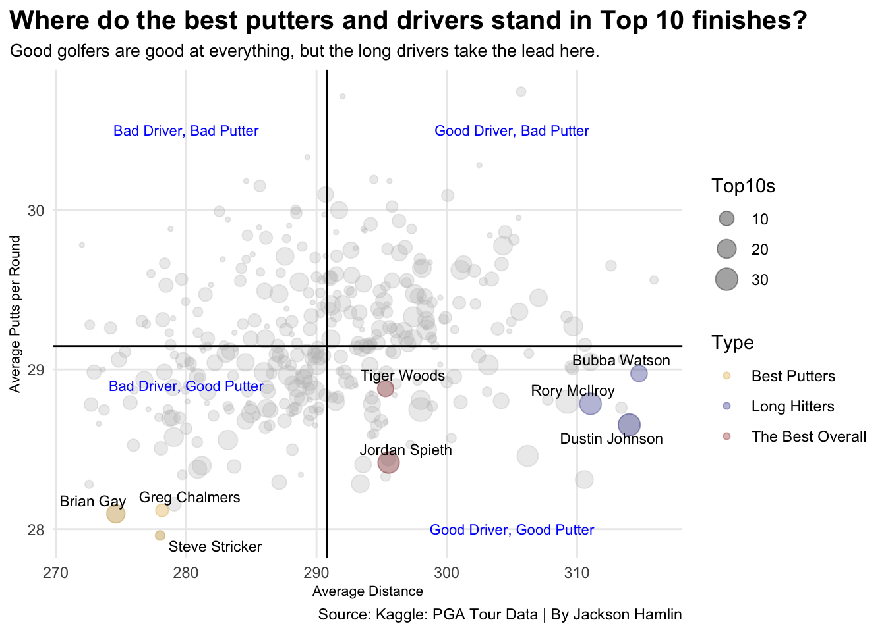

Golf is a very old school game, but as time goes on, this game changes like crazy. In the past, golf fans everywhere believed that putting was the most important part of golf. In fact, they believed that putting was the real reason for lowering scores.
Drive for show, putt for dough. If you find yourself on any golf course in the world, there is a good chance you hear this saying at least once. Don’t be surprised if you hear it from the group of 80 year olds taking 30 minutes to play one hole.
What about driving distance though? As time goes by, golfers are hitting the ball further and further. In fact, the average driving distance in the 1990’s was 262 yards. In the 2010’s, it was 287 yards. In recent years we have also seen these power hitters finding a lot of success on tour, and it really has become obvious that these players have found an edge over their opponents.
So, which skill produces more “dough”? Let’s look at some numbers to determine which is more important to lowering golf scores.
Kaggle: PGA Tour Data site provides us with multiple sets of data from the 2010-2018 PGA Tour seasons. This data set includes valuable numbers such as, average driving distance, average putts per round, top 10 finishes, and average score throughout the season.
First off, let’s look at the top three players from the 2010-2018 era. These top three are based off of their average score and top 10 finishes during the eight year span. In golf, the best golfers shoot the lowest score, and more top 10 finishes relates to consistency, which is key in the game of golf. Here are the top three.
Tiger Woods, Dustin Johnson, Jordan Spieth. Familiar names, no? From 2010-2018, these three players played extremely well and separated themselves from hundreds of other golfers. Tiger Woods may have not had as many top 10’s, but he may have been busier with… other things.
Let’s take a look now at the best putters. These players had the lowest average amount of putts per round in an eight year span. Where do they stand in top 10 finishes and average score?
Steve Stricker, Brian Gay, Greg Chalmers. The average golf fan might say, who? Take a look at average driving distance, each top three putter averages below 280 yards off the tee.
Let’s take a look at where the big hitters stand. These players averaged the longest driving distance in the eight year span. Where do they stand in top 10 finishes and average score?
Bubba Watson, Dustin Johnson, Rory Mcilroy. Again, some familiar names at the top, and we also have seen Dustin Johnson in the top 3 of another chart; Best players based off of top 10 finishes and average scores.
Now let’s dive into something a little deeper. Does a low amount of putts correlate to lower scores? This scatter plot shows the correlation of average putts per round and average score. There is a correlation, but it isn’t showing us much.
Code
ggplot() +geom_point(data=newgolf, aes(x=AvgScore, y=AvgPutts), color="grey") +geom_smooth(data=newgolf, aes(x=AvgScore, y=AvgPutts), method="lm", se=FALSE) +geom_point(data=combined, aes(x=AvgScore, y=AvgPutts, color=Type)) +geom_text_repel(data=combined, aes(x=AvgScore, y=AvgPutts, label=Player.Name),size=3) +scale_color_manual(values=c("#DAA520", "#000080", "#8B0000")) +labs(x ="Average Score",y ="Average Putts per Round",title ="Is putting the key to lower golf scores?",subtitle ="The best putters on tour.. average low 70's.",caption ="Source: Kaggle: PGA Tour Data | By Jackson Hamlin" ) +theme_minimal() +theme(plot.title =element_text(size =15, face ="bold"),axis.title =element_text(size =9),plot.subtitle =element_text(size =10),panel.grid.minor =element_blank(),plot.title.position ="plot" )

After seeing the small correlation between a low number of putts and lower scores, let’s look at how driving distance affects average score.
This scatter plot clearly shows a larger correlation between average driving distance and average score. The longer you drive the ball, the more likely you are to shoot lower scores. Putt for dough? Hmm.
Code
ggplot() +geom_point(data=newgolf, aes(x=AvgScore, y=AvgDistance), color="grey") +geom_smooth(data=newgolf, aes(x=AvgScore, y=AvgDistance), method="lm", se=FALSE) +geom_point(data=combined, aes(x=AvgScore, y=AvgDistance, color=Type)) +geom_text_repel(data=combined, aes(x=AvgScore, y=AvgDistance, label=Player.Name),size=3) +scale_color_manual(values=c("#DAA520", "#000080", "#8B0000")) +labs(x ="Average Score",y ="Average Distance",title ="Does power off the tee result in lower golf scores?",subtitle ="The further the ball goes..the lower the score goes.",caption ="Source: Kaggle: PGA Tour Data | By Jackson Hamlin" ) +theme_minimal() +theme(plot.title =element_text(size =15, face ="bold"),axis.title =element_text(size =9),plot.subtitle =element_text(size =10),panel.grid.minor =element_blank(),plot.title.position ="plot" )

Last but not least, it would be smart to see how both driving distance and putting correlates to top 10 finishes. Once again, top 10 finishes results in more dough. This bubble chart with the size of the dot scaled by number of top 10’s shows that golfers who drive the ball further on average off the tee, have more top 10 finishes than those who average a lower amount of putts.
Code
ggplot() +geom_point(data=newgolf, aes(x=AvgDistance, y=AvgPutts, size=Top10s), color="grey", alpha=.3) +geom_point(data=combined, aes(x=AvgDistance, y=AvgPutts, size=Top10ss, color=Type), alpha=.3)+geom_text(aes(x=305, y=28, label="Good Driver, Good Putter"), size=2.9, color="blue") +geom_text(aes(x=280, y=28.9, label="Bad Driver, Good Putter"), size=2.9, color="blue") +geom_text(aes(x=280, y=30.5, label="Bad Driver, Bad Putter"), size=2.9, color="blue") +geom_text(aes(x=305, y=30.5, label="Good Driver, Bad Putter"), size=2.9, color="blue") +geom_vline(xintercept =290.8136) +geom_hline(yintercept =29.14646) +geom_text_repel(data=combined, aes(x=AvgDistance, y=AvgPutts, label=Player.Name),size=3) +scale_color_manual(values=c("#DAA520", "#000080", "#8B0000")) +labs(x ="Average Distance",y ="Average Putts per Round",title ="Where do the best putters and drivers stand in Top 10 finishes?",subtitle ="Good golfers are good at everything, but the long drivers take the lead here.",caption ="Source: Kaggle: PGA Tour Data | By Jackson Hamlin" ) +theme_minimal() +theme(plot.title =element_text(size =15, face ="bold"),axis.title =element_text(size =8),plot.subtitle =element_text(size =10),panel.grid.minor =element_blank(),plot.title.position ="plot" )

Data is hard to beat. Especially in the game of golf, numbers don’t lie. Golf is a rapidly changing game, but as for now, Drive for show, putt for dough? That just may not be the case.